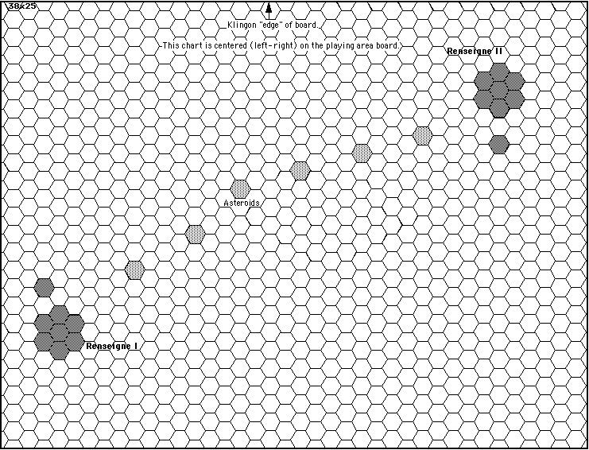

Scenario 09, prepared by David Ternes
Planetary Geography.
There are two planets, each with a moon, and six asteroids as shown on the setup chart.

Setup.
The setup locations are specified in the player information.
Victory Conditions.
The following general criteria apply. These conditions should not be known by the players.
| Klingon Victory | Major | - | The Federation force leaves. No more than three ships, excluding the battleship, may escape and they must all have damage. Klingon losses are not considered. | |
| Intermediate | - | The Federation force leaves. All four ships are destroyed or heavily damaged. Klingons may not loose their battleship unless the Federation battleship is also destroyed. | ||
| Minor | - | Federation does not achieve its victory conditions and the Klingon battleship is not destroyed. Klingons may have left the battle and still get this victory level. | ||
| Draw | - | Neither side achieves its victory conditions and there is no otherwise clear winner. | ||
| Federation Victory | Minor | - | The Klingon force leaves. Either; 1) the battleship, or 2) the three other ships, must not have heavy damage. The Federation must have destroyed or heavily damaged more than one Klingon ship for every Federation ship heavily damaged or destroyed. | |
| Intermediate | - | The Klingon battleship and at least three other ships must be destroyed or heavily damaged. The Federation may not have lost the battleship and must have at least two ships without heavy damage. The Federation must not have left the battle area. | ||
| Major | - | The Klingon force leaves. The Klingon battleship and at least three other ships are destroyed. Of the remaining Klingon ships, at least one must have heavy damage. The Federation battleship and at least two other ship must not have heavy damage, or all Federation ships except the battleship must not have heavy damage. | ||
| Note: | - | Heavy damage means the ship does not have at least 25% of its superstructure and 50% of its power remaining. | ||